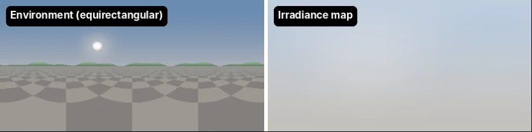
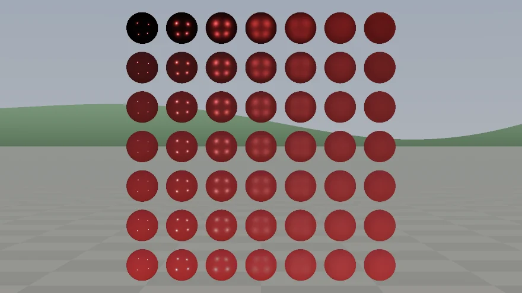

PBR
Diffuse Irradiance#
Point lights are only part of the light in a scene. Most of what reaches a surface is ambient: the sky, the ground, a nearby wall. Image-based lighting (IBL) treats an image of the whole environment as one large light source, so that objects look like they belong in their surroundings.
The reflectance equation splits neatly into a diffuse and a specular integral. This chapter handles the diffuse half.
The diffuse integral#
For the Lambertian term the BRDF is a constant, so it moves out of the integral:
Lo = kD · (albedo / π) · ∫Ω Li(wi) (n · wi) dwi
The remaining integral depends only on the normal n. It is the total light arriving over the hemisphere around n, weighted by the cosine. We can precompute it for every possible normal and store the results in a cubemap, the irradiance map. At render time, ambient diffuse lighting is one texture lookup with the surface normal.
HDR environment maps#
Environment images must be HDR, because the sun is thousands of times brighter than the sky around it. They are usually distributed as equirectangular images, a 2:1 panorama, in Radiance .hdr or OpenEXR format. Poly Haven has a large free collection.
Image I/O decodes both formats. Draw the image into a floating-point bitmap and upload it:
import ImageIO
func loadHDRTexture(url: URL, device: MTLDevice) -> MTLTexture? {
guard let source = CGImageSourceCreateWithURL(url as CFURL, nil),
let image = CGImageSourceCreateImageAtIndex(source, 0, nil),
let colorSpace = CGColorSpace(name: CGColorSpace.extendedLinearSRGB) else { return nil }
let width = image.width, height = image.height
let bytesPerRow = width * 16
let bitmapInfo = CGImageAlphaInfo.premultipliedLast.rawValue
| CGBitmapInfo.floatComponents.rawValue
| CGBitmapInfo.byteOrder32Little.rawValue
// Passing nil lets Core Graphics allocate and own the pixel memory.
guard let context = CGContext(data: nil, width: width, height: height,
bitsPerComponent: 32, bytesPerRow: bytesPerRow,
space: colorSpace, bitmapInfo: bitmapInfo) else { return nil }
context.draw(image, in: CGRect(x: 0, y: 0, width: width, height: height))
guard let pixels = context.data else { return nil }
let descriptor = MTLTextureDescriptor.texture2DDescriptor(
pixelFormat: .rgba32Float, width: width, height: height, mipmapped: false)
let texture = device.makeTexture(descriptor: descriptor)
texture?.replace(region: MTLRegionMake2D(0, 0, width, height), mipmapLevel: 0,
withBytes: pixels, bytesPerRow: bytesPerRow)
return texture
}
// stb_image decodes Radiance .hdr files to floats with stbi_loadf.
MTL::Texture* loadHDRTexture(MTL::Device* device, const char* path) {
int width, height, channels;
float* pixels = stbi_loadf(path, &width, &height, &channels, 4); // RGBA, 32-bit float
if (!pixels) return nullptr;
MTL::TextureDescriptor* descriptor = MTL::TextureDescriptor::texture2DDescriptor(
MTL::PixelFormatRGBA32Float, width, height, false);
MTL::Texture* texture = device->newTexture(descriptor);
texture->replaceRegion(MTL::Region::Make2D(0, 0, width, height), 0,
pixels, width * 4 * sizeof(float));
stbi_image_free(pixels);
return texture;
}
From panorama to cubemap#
A cubemap is easier to sample and to convolve than a panorama, so convert once at load time. Render a unit cube into each of the six faces of an .rgba16Float cube texture, using the left-handed face matrices from the Cubemaps chapter with the camera at the origin:
struct CaptureOut {
float4 position [[position]];
float3 localPosition;
};
vertex CaptureOut vertex_capture(VertexIn in [[stage_in]],
constant CaptureUniforms &uniforms [[buffer(1)]]) {
CaptureOut out;
out.position = uniforms.viewProjection * float4(in.position, 1.0);
out.localPosition = in.position;
return out;
}
static float2 equirectUV(float3 direction) {
float2 uv = float2(atan2(direction.z, direction.x), asin(direction.y));
uv *= float2(0.15915494, -0.31830989); // 1/(2π), -1/π: v runs downward in Metal
return uv + 0.5;
}
fragment float4 fragment_equirectToCube(CaptureOut in [[stage_in]],
texture2d<float> panorama [[texture(0)]],
sampler s [[sampler(0)]]) {
float3 direction = normalize(in.localPosition);
return float4(panorama.sample(s, equirectUV(direction)).rgb, 1.0);
}
func renderToCube(_ cube: MTLTexture, level: Int = 0,
commandBuffer: MTLCommandBuffer,
draw: (MTLRenderCommandEncoder, float4x4) -> Void) {
let projection = float4x4(perspectiveLHFov: .pi / 2, aspect: 1, near: 0.1, far: 10)
for face in 0..<6 {
let pass = MTLRenderPassDescriptor()
pass.colorAttachments[0].texture = cube
pass.colorAttachments[0].slice = face
pass.colorAttachments[0].level = level
pass.colorAttachments[0].loadAction = .dontCare
pass.colorAttachments[0].storeAction = .store
let encoder = commandBuffer.makeRenderCommandEncoder(descriptor: pass)!
let view = float4x4(lookAtLH: [0, 0, 0], center: faces[face].direction, up: faces[face].up)
draw(encoder, projection * view)
encoder.endEncoding()
}
}
#include <functional>
void renderToCube(MTL::Texture* cube, NS::UInteger level, MTL::CommandBuffer* commandBuffer,
const std::function<void(MTL::RenderCommandEncoder*, simd::float4x4)>& draw) {
simd::float4x4 projection = perspectiveLH(float(M_PI) / 2, 1.0f, 0.1f, 10.0f);
for (int face = 0; face < 6; face++) {
MTL::RenderPassDescriptor* pass = MTL::RenderPassDescriptor::alloc()->init();
pass->colorAttachments()->object(0)->setTexture(cube);
pass->colorAttachments()->object(0)->setSlice(face);
pass->colorAttachments()->object(0)->setLevel(level);
pass->colorAttachments()->object(0)->setLoadAction(MTL::LoadActionDontCare);
pass->colorAttachments()->object(0)->setStoreAction(MTL::StoreActionStore);
MTL::RenderCommandEncoder* encoder = commandBuffer->renderCommandEncoder(pass);
simd::float4x4 view = lookAtLH(simd::float3{0, 0, 0}, faces[face].direction, faces[face].up);
draw(encoder, projection * view);
encoder->endEncoding();
pass->release();
}
}
Draw the cube with culling disabled, since the camera is inside it. Create the environment cube with mipmaps and call generateMipmaps(for:) with a blit encoder afterward; the next chapter needs them. A size of 512 or 1024 per face is plenty. You can now show the environment as a skybox, tone mapped along with everything else.
Convolving the irradiance map#
For each direction of the irradiance cubemap, we need the cosine-weighted average of the environment over the hemisphere around it. The integral is approximated by sampling the hemisphere on a regular grid of spherical coordinates:
fragment float4 fragment_irradiance(CaptureOut in [[stage_in]],
texturecube<float> environment [[texture(0)]],
sampler s [[sampler(0)]]) {
float3 N = normalize(in.localPosition);
float3 up = abs(N.y) < 0.999 ? float3(0, 1, 0) : float3(1, 0, 0);
float3 right = normalize(cross(up, N));
up = cross(N, right);
float3 irradiance = float3(0.0);
float sampleCount = 0.0;
const float delta = 0.025;
for (float phi = 0.0; phi < 2.0 * PI; phi += delta) {
for (float theta = 0.0; theta < 0.5 * PI; theta += delta) {
// Spherical to tangent space, then to world space.
float3 t = float3(sin(theta) * cos(phi), sin(theta) * sin(phi), cos(theta));
float3 direction = t.x * right + t.y * up + t.z * N;
irradiance += environment.sample(s, direction, level(3)).rgb * cos(theta) * sin(theta);
sampleCount += 1.0;
}
}
return float4(PI * irradiance / sampleCount, 1.0);
}
cos(theta) is the cosine factor of the integral, and sin(theta) compensates for the sample points bunching up toward the pole of the hemisphere. Sampling a lower mip level of the environment (level 3 here) suppresses the bright speckles that a tiny, intense sun would otherwise cause.
Render this into a small cube with renderToCube. The irradiance map is very blurry by nature, so 32 × 32 per face is enough. It is computed once at load time.

Using it#
In the PBR shader, replace the constant ambient term:
static float3 fresnelSchlickRoughness(float cosTheta, float3 F0, float roughness) {
return F0 + (max(float3(1.0 - roughness), F0) - F0) * pow(saturate(1.0 - cosTheta), 5.0);
}
float3 kS = fresnelSchlickRoughness(max(dot(N, V), 0.0), F0, roughness);
float3 kD = (1.0 - kS) * (1.0 - metallic);
float3 irradiance = irradianceMap.sample(s, N).rgb;
float3 ambient = kD * irradiance * albedo * ao;
Ambient light comes from all directions, so there is no single halfway vector for the Fresnel term. We use the angle between the normal and the view direction, and a variant of Fresnel-Schlick that takes roughness into account so rough surfaces do not get bright rims.
The spheres now pick up the blue of the sky on top and the color of the ground below, and they finally sit in their environment. Metals look black in their unlit areas, because they have no diffuse term. They are waiting for specular reflections, which come next.

Alternatives#
- Spherical harmonics represent the irradiance of an environment with just nine colors, since it varies so smoothly. Model I/O can compute them (
MDLLightProbe), and evaluating them in the shader is cheaper than a cubemap lookup. MDLTexture.irradianceTextureCube(with:name:dimensions:)generates an irradiance cubemap from an environment cubemap for you. Writing the convolution once yourself is still the best way to understand what the map contains.